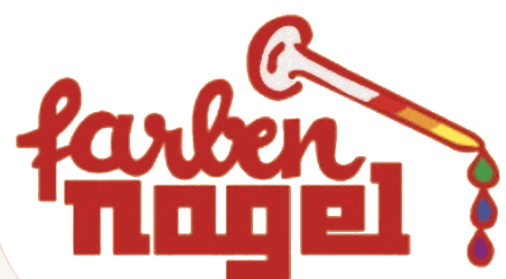
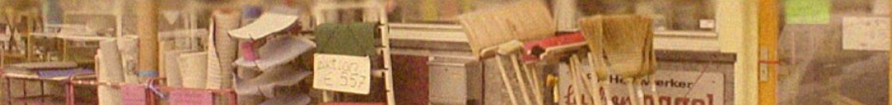
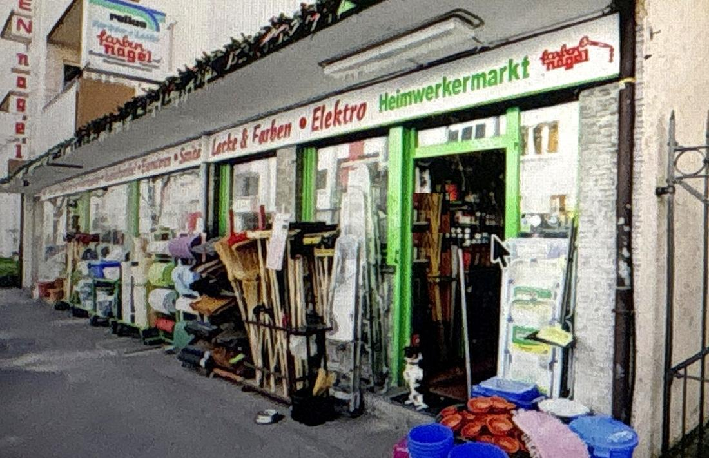

72 Std.
Offen pro Woche
Montag bis Samstag von 8 bis 20 Uhr. Vor der Frühschicht und nach dem Feierabend — dann, wenn andere zu haben.


Heimwerkermarkt in Stuttgart-West seit 1966. Über 10.000 Artikel auf zwei Gängen — Schrauben ab einem Stück, Farbe nach Wunsch gemischt, und jemand, der weiß, welche passt.
Beschreiben Sie, was Sie brauchen. Wir antworten während der Öffnungszeiten und legen es auf Wunsch zur Abholung bereit.
Keine Vorkasse, keine Anmeldung. Reservierung bis Ladenschluss.
Nicht dabei? Wird bestellt — meist über Nacht.
Zu Fuß aus dem halben WestenKein Auto nötigSechs Tage bis 20 Uhr offen

Fehlt zwischendurch — das ist doch übel — ’ne Schraube, Mutter oder Dübel oder ein and’res Einzelstück, dann hat man bei uns wirklich Glück! Wir haben alles auch einzeln da.
Wir sind nicht billiger als ein Baumarkt auf 10.000 Quadratmetern. Wir sind schneller, kleinteiliger und wir antworten.
Montag bis Samstag von 8 bis 20 Uhr. Vor der Frühschicht und nach dem Feierabend — dann, wenn andere zu haben.
Schrauben, Muttern, Dübel, Sicherungen, Dichtungen — einzeln abgegeben. Auch die eine, die fehlt.
Beschreiben Sie das Problem, nicht das Produkt. Wir übersetzen das in den passenden Artikel.
Die Dinge, für die man sonst zwei Termine und eine Woche braucht.
Wandfarbe, Lack und Lasur nach Wunschton. Muster mitbringen, wir treffen ihn.
Nachschlüssel für Wohnung, Keller, Briefkasten, Fahrradschloss.
Leisten, Kabel, Kette, Schlauch — auf Maß, direkt im Laden.
Sperriges kommt zu Ihnen. Innerhalb des Viertels am selben Tag.
Was nicht im Regal steht, ordern wir. Meist am nächsten Vormittag da.
Anrufen oder schreiben, wir legen es mit Ihrem Namen an die Kasse.
Ein Trupp, der auf ein Bauteil wartet, kostet mehr als jede Preisdifferenz. Wir sind fünf Minuten entfernt und führen ein Rechnungskonto.
Kauf auf Kundennummer, Sammelrechnung zum Monatsende, Lieferschein pro Objekt.
Material telefonisch durchgeben, kommissioniert bereitstellen lassen, morgens mitnehmen.
Anlieferung an Baustellen und Objekte im Westen, Süden und der Innenstadt.
Eine Nummer, ein Name, kein Callcenter. Auch für Standardlisten und Wiederkehrbedarf.
Was Kundinnen und Kunden am Telefon und im Laden am häufigsten fragen.
Bei Farben Nagel in der Gutenbergstraße 65 in Stuttgart-West geben wir Schrauben, Muttern, Dübel, Sicherungen und Dichtungen einzeln ab — Sie müssen keine 100er-Packung kaufen. Bringen Sie das alte Teil oder ein Foto mit, dann finden wir das passende Gegenstück. Geöffnet ist Montag bis Samstag von 8 bis 20 Uhr.
Ja. Farben Nagel mischt Wandfarbe, Lack und Lasur nach Wunschton, während Sie warten — in der Regel dauert das etwa fünfzehn Minuten. Bringen Sie ein Muster mit, etwa ein Stück Tapete, eine Leiste oder einen Farbfächer, dann treffen wir den Ton. Sie finden uns in der Gutenbergstraße 65 in Stuttgart-West.
Farben Nagel fertigt Nachschlüssel direkt im Laden an, meist in etwa fünf Minuten. Das gilt für Wohnungs-, Keller- und Briefkastenschlüssel sowie für Fahrradschlösser. Bringen Sie den Originalschlüssel mit. Sie finden uns in der Gutenbergstraße 65 in Stuttgart-West, montags bis samstags von 8 bis 20 Uhr.
Der Heimwerkermarkt Farben Nagel in Stuttgart-West hat montags bis samstags von 8 bis 20 Uhr geöffnet, auch samstags bis zum Abend — das sind 72 Öffnungsstunden pro Woche. Sonntags ist geschlossen, an Feiertagen gelten abweichende Zeiten. Sie finden uns in der Gutenbergstraße 65, wenige Gehminuten von der Haltestelle Schwabstraße.
Farben Nagel liegt in der Gutenbergstraße 65 in Stuttgart-West. Mit der S-Bahn nehmen Sie die Linien S1 bis S5 zur Haltestelle Schwabstraße und gehen Richtung Stadtmitte. Die Buslinien 42 und 44 halten ebenfalls in der Nähe. Mit dem Auto fahren Sie die Rotebühlstraße bis zur Kreuzung Schwabstraße, dort rechts und an der nächsten Kreuzung noch einmal rechts.
Ja. Sperrige Ware liefert Farben Nagel innerhalb des Viertels am selben Tag aus. Für Handwerksbetriebe und Hausverwaltungen liefern wir auch an Baustellen und Objekte im Westen, im Süden und in der Innenstadt. Sprechen Sie uns im Laden an oder rufen Sie unter 0711 615 01 20 an.
Ja. Farben Nagel führt Rechnungskonten für Betriebe: Sie kaufen auf Kundennummer, erhalten eine Sammelrechnung zum Monatsende und pro Objekt einen Lieferschein. Material können Sie telefonisch durchgeben und kommissioniert abholen. Sie haben eine feste Ansprechperson statt eines Callcenters — gedacht für Handwerk, Hausverwaltung und Gastronomie.
Nichts. Die Beratung gehört bei Farben Nagel zum Einkauf. Beschreiben Sie das Problem, nicht das Produkt — wir übersetzen das in den passenden Artikel. Was nicht im Regal steht, bestellen wir; meist ist es am nächsten Vormittag da. Auf Wunsch legen wir die Ware bis Ladenschluss unter Ihrem Namen an die Kasse.
Die wichtigsten Angaben auf einen Blick.
Farben Nagel ist ein inhabergeführter Heimwerkermarkt in Stuttgart-West, gegründet 1966. Über 10.000 Artikel auf zwei Gängen.
Gutenbergstraße 65, 70176 Stuttgart-West. S-Bahn S1–S5 bis Schwabstraße, Buslinien 42 und 44. Aus dem halben Westen zu Fuß erreichbar.
Montag bis Samstag von 8:00 bis 20:00 Uhr, sonntags geschlossen. Das sind 72 Öffnungsstunden pro Woche. An Feiertagen abweichend.
Farben und Lacke, Eisenwaren, Werkzeug, Sanitär, Elektro, Boden und Tapete, Garten und Balkon, Haushalt, Schlüssel.
Farbe nach Wunschton mischen, Zuschnitt, Nachschlüssel, Lieferung im Viertel, Bestellservice über Nacht, Reservierung zur Abholung.
Einzelabgabe ab einem Stück statt 100er-Box. Beratung durch einen Menschen. Rechnungskonto für Handwerk, Hausverwaltung und Gastronomie.